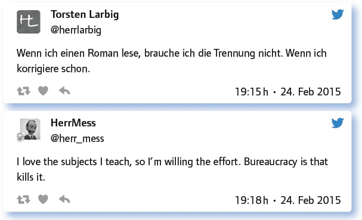
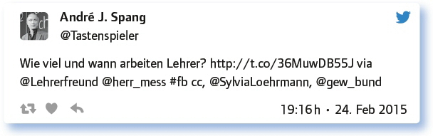
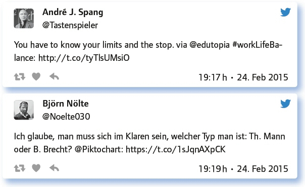
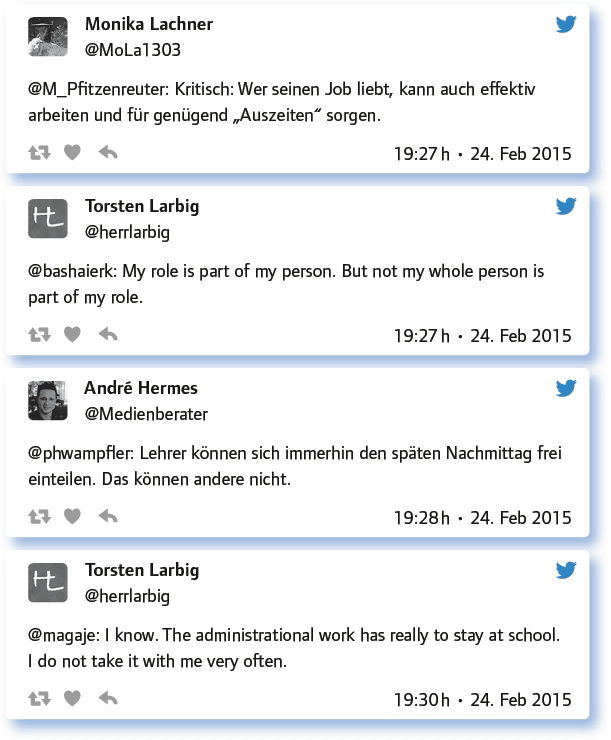
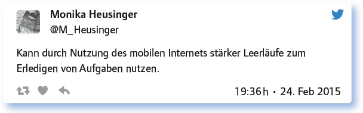

von Elke Höfler
Ein Papier, das bei der Schulberatung Bayern zum Download vorliegt, trägt den Titel „Lehrerbelastung aus medizinisch-psychologischer Sicht“. Der dort vorliegende Rundumblick, was den Lehrerberuf besonders belastend macht und welche Strategien helfen können, die empfundene Belastung zu reduzieren, geht zwar in eine etwas andere Richtung als diese Ausgabe des #EDchatDE, kann aber nicht vom Thema getrennt werden. Wo hört Arbeit auf, wo fängt das Privatleben an? Haben Lehrer ein Privatleben? Das sind nur einige Fragen, die in dieser Ausgabe zur Diskussion stehen.
Wie sieht das bei dir zurzeit so aus? Lebst du in Bezug auf Schule und Privatleben getrennt?
Die Teilgeber des #EDchatDE leben beides: Einige trennen Arbeit und Privatleben, andere (aus Überzeugung) nicht. Wie sich zeigt, sind für viele die Grenzen verschwimmend, sodass eine saubere Trennung auch schwierig wäre:
Schwierige Frage. Ich nehme mir Freizeit, ja. Ich mache zu komischen Zeiten was für die Schule, ja.
Ich trenne meinen Müll. Was mir Befriedigung verschafft, nenne ich Arbeit, alles andere erkläre ich für privat (und umgekehrt).
My professional and private lives overlap pretty much. My subjects are my hobbies, learning is a passion, what can I do?
Work-Life-Balance suggeriert, dass Arbeit nichts mit Leben zu tun habe. Ich bin anderer Meinung und kombiniere beides.
Gibt es an deiner Schule Regelungen, die die Trennung von Arbeit und Privatleben unterstützen? Welche? Was fehlt?
Vor allem die räumliche Trennung, die aufgrund fehlender physischer Arbeitsplätze in der Schule beinahe unmöglich scheint, wurde diskutiert. Aber auch der virtuelle Arbeitsplatz, über E-Mail z. B., war Ziel der angestellten Überlegungen:
Da fehlt so einiges. Arbeitsplätze an der Schule wären der wichtigste Schritt. Da gibt’s kaum was.
Nein. Aber es wird auch nicht erwartet, dass man Tag und Nacht zur Verfügung steht. Das ist viel wert.
Gerade die ständige Verfügbarkeit wurde dabei angesprochen:
Nope. Und mir fehlt schon lange eine E-Mail-Policy!
Was mir fehlt: Beschränkung der Arbeitsbeanspruchung auf Kernzeiten, z. B. 7.30 bis 17.00 Uhr.
Braucht es überhaupt eine Trennung? Wo liegen Vor- und Nachteile, oder sollen nur bestimmte Bereiche getrennt werden?
Eine Trennung auf ganzer Linie erscheint schwierig, wie Frage 1 gezeigt hat. Ist sie für Lehrer/innen überhaupt notwendig? Vielfach wurden Bereiche genannt, in denen eine Trennung sinnvoll oder notwendig ist, und Bereiche, in denen eine Überlappung Sinn macht.

Eine Grafik zeigt die Arbeitszeitverteilung zweier Lehrpersonen und einer Angestellten im Vergleich:

Dabei sollten Lehrpersonen sich Strategien überlegen, mit den Anforderungen des Berufs umzugehen:

Blick über den Tellerrand: Wie sieht es bezüglich der Trennung von Arbeit und Privatleben in anderen Berufsfeldern aus?
Die fehlende Trennung zwischen Beruf und Privatleben trifft auch andere Berufe, wenngleich es hier zu einem Paradigmenwechsel zu kommen scheint und einige Berufe zumindest nicht die Arbeit wohl aber die Gedanken an die Arbeit mit nach Hause nehmen (können):
Auch andere Berufe tragen Dinge mit in das Privatleben. Da müssen wir nicht auf Alleinstellung hoffen.
Industriearbeiter/Handwerker haben frei, weil sie den Arbeitsplatz schlecht mitnehmen können. Alle anderen mischen eben.
Je intensiver die Arbeit mit anderen Menschen ist, umso eher nimmt man Arbeit mit nach Hause.
Der Lehrberuf hat enorme zeitliche Peaks und ist sehr beziehungslastig. Das ist bei vergleichbaren Berufen nicht immer der Fall.
Antworte auf 3 Tweets unterschiedlicher Teilgeberinnen a) zustimmend, b) kritisch, c) provozierend!
In dieser Ausgabe waren die Reaktionen der #EDchatDE-Teilgeber eher kritisch und lösten zahlreiche Reflexionen aus:

Wie sieht es im Zeitalter des mobilen Internets aus: Kommt es da nicht zwangsläufig zur Vermischung? Benefit oder Disruption?
Es ist möglich, immer und überall online zu sein. Bleibt da nicht die Entspannung auf der Strecke?

Der (individuell) sinnvolle Einsatz erscheint hier zentral, wenngleich er ambivalent wahrgenommen wird:
The main thing to me are the connections thru Social Media. I can meet education leaders online and learn with them.
Gefahr der Prokrastination nimmt zu durch mehr Ablenkungen, aber auch mehr Zeitersparnis bei Vorbereitung möglich.
Die Art der Nutzung bleibt jedem oder jeder selbst überlassen:
Nicht zwangsläufig, find ich. Man bleibt auch dann noch Herr seiner Entscheidungen. („Nein, da antworte ich bis SO Abend nich.“)
Man muss sich selber zeitliche Nutzungsgrenzen setzen. Bis wann lese ich berufliche Mails?
Stichwort Burnout: Welche Strategien hast du im Alltag? Wie sorgst du für Zeiten im Jahr, in denen du WIRKLICH Urlaub hast?
Wenn die Trennung von Arbeit und Privatleben schon während des Schuljahres nicht funktioniert, welche Möglichkeiten gibt es hierfür in den Ferien? Die Teilgeber/innen verraten ihre Strategien, um Stress abzubauen, Kraft zu tanken und dem (möglichen) Burnout entgegenzuwirken. Von Sport bis zur digitalen Pause wurden unterschiedliche Strategien getwittert, die im ausführlichen Protokoll nachgelesen werden können. Hier ein Auszug:
Kind 1, Kind 2, Kind 3; echtes Leben fordert viel Aufmerksamkeit und sorgt für Ablenkung.
Doing sports – very important to stay healthy – running, skiing, hiking, biking etc.
In der Schulzeit. Feste Termine zum Sport – macht den Kopf frei und ich bin 3 Stunden nicht erreichbar.
Ich habe den letzten Familien-Urlaub ohne Handy verbracht. Hat gar nicht weh getan.
In wirklichem Urlaub brauche ich digitale Distanz. Lese z. B. kaum Mails, Twitter.
Welche Anregungen, Fragen hast du sonst noch zum Thema?
Die abschließende Frage brachte Perspektiven ins Spiel, die so nicht diskutiert wurden und die jedenfalls eine Reflexion wert sind:
Thema betrifft für mich auch die SuS: Auch sie haben Privatleben, das sich oft schwer trennen lässt.
Die Arbeit an der Qualität des Schulklimas lohnt immer und entlastet an vielen Stellen.
Wenn viel ansteht, hilft mir die Pomodoro-Technik. Jetzt auch mit Bäumchen-App: http://t.co/hVKHU47Beo
Fazit:
Die Diskussion zur Trennung von Privatleben und Arbeitszeit brachte deutlich die Heterogenität der Meinungen und Verschiedenheit der Zugänge zum Thema ans Licht. Wenn auch Lehrende nicht die einzige Berufsgruppe sind, bei der die Trennung von Arbeit und Privatleben wichtig erscheint und dennoch schwer fällt, so ist es wichtig, sich Strategien zu überlegen, mit der gegebenen Situation klarzukommen, und sich auf diese Anforderungen schon im Studium einzustellen, um (böse) Überraschungen zu vermeiden.
Weiterführende Informationen:
Blogbeitrag zur 69. Ausgabe des #EDchatDE: https://edchatde.wordpress.com/2015/02/23/zur-vorbereitung-des-69-edchatde-als-lehrer-arbeit-privatleben-trennen-ist-das-moglichnotigfalsch/
Blogbeitrag zur 124. Ausgabe des #EDchatDE: Stress- und Zeitmanagement für Lehrer: https://edchatde.wordpress.com/2016/04/25/zur-vorbereitung-des-124-edchatde-am-26-04-16-zeit-und-stressmanagement-fuer-lehrer/
Protokoll zur 124. Ausgabe des #EDchatDE: https://docs.google.com/spreadsheets/d/1Ll06yShLm205iG2LCtFcHcc1p4A6VvPMYQp9dLToEec/pubhtml
Lehrerbelastung aus medizinisch-psychologischer Sicht: https://www.schulberatung.bayern.de/imperia/md/content/schulberatung/dr_vogt.pdf
Link zum vollständigen Protokoll:
1 Zit. n. Klaus Zierer (2015): Hattie für gestresste Lehrer. Baltmannsweiler, S. 15